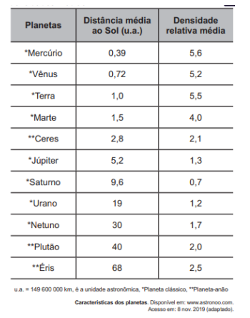

Fonte/rotulagem: ENEM 2021 — Astronomia (planetas)
Enunciado (texto integral):
TEXTO I
No cordel intitulado Senhor dos Anéis, de autoria de Gonçalo Ferreira da Silva, lê-se a sextilha:
A distância em relação
Ao nosso planeta amado
Pouco menos que a do Sol
Ele está distanciado
E menos denso que a água
Quando no normal estado.
TEXTO II
Distâncias médias dos planetas ao Sol e suas densidades médias.

Considerando os versos da sextilha e as informações da tabela, a qual planeta o cordel faz referência?
Solução (interativa)
1) Qual planeta do sistema solar tem densidade média menor que a da água (≈1 g/cm³)?
Na tabela, apenas um planeta apresenta densidade relativa ≈ 0,7.
2) O verso “Pouco menos que a do Sol ele está distanciado” indica que a distância Terra→planeta é ligeiramente menor que a distância planeta→Sol. Isso é compatível com qual planeta gigante?
Para planetas externos, Terra→planeta pode ser da ordem de 8–10 u.a. quando em oposição; compare com as distâncias ao Sol.
3) Conclua: qual planeta satisfaz simultaneamente os dois indícios (densidade < 1 e verso da distância)?
É o único com densidade menor que a da água e com distância ao Sol cerca de 9–10 u.a.
Alternativas
A
Mercúrio.
B
Júpiter.
C
Urano.
D
Saturno.
E
Netuno.
-->
Se houver figuras, deixe-as ativas quando o arquivo estiver disponível; aqui elas foram deixadas comentadas com alt descritivo.